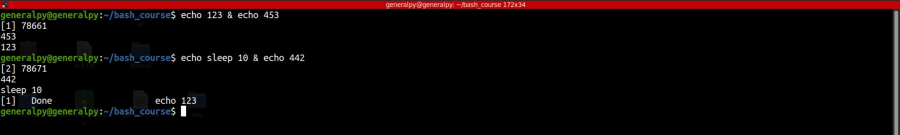
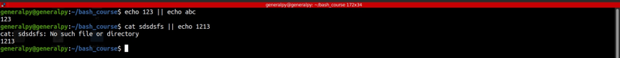

Command list is when we put one or more commands on a given line.
List operators are the control operators which are enable us to create command lists with different behaviours.
There are 4 list operators :
& allows us to send command before it to background and create a job from it. It is generally used with time consuming commands. Execution is non sequential.

; is used to execute commands sequentially. This command is very useful when we want to execute many commands on single line saving space.
command1 ; command2 ; ....
Command after ; waits for 1st command to execute hence execution is sequential.
&& is used to sequentially execute commands according to return code of previously executed commands.
command1 && command2...
Command 2 will only execute if command1 if executed successfully with 0 exit code.
|| is used to sequentially execute commands according return code of previous command. Second command will only execute if first command fails. Used to create backup command.
command1 || command2...
